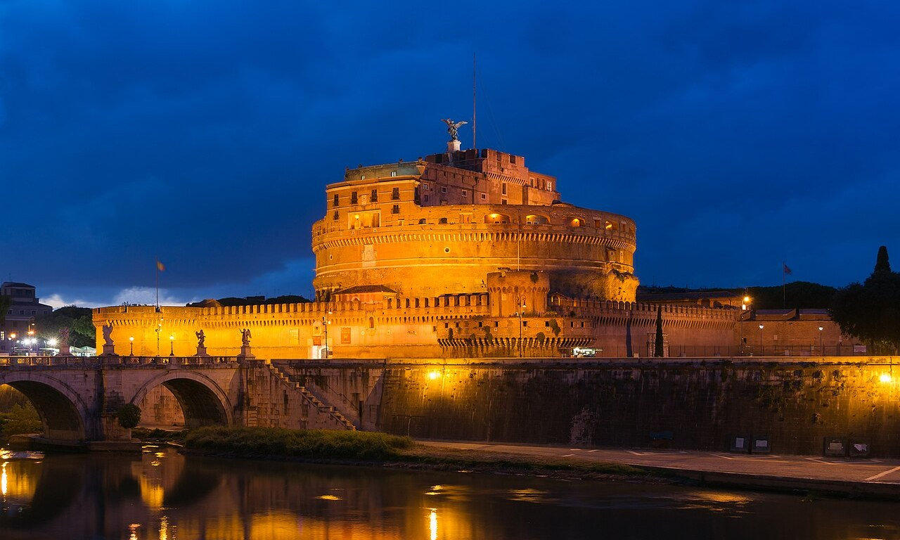
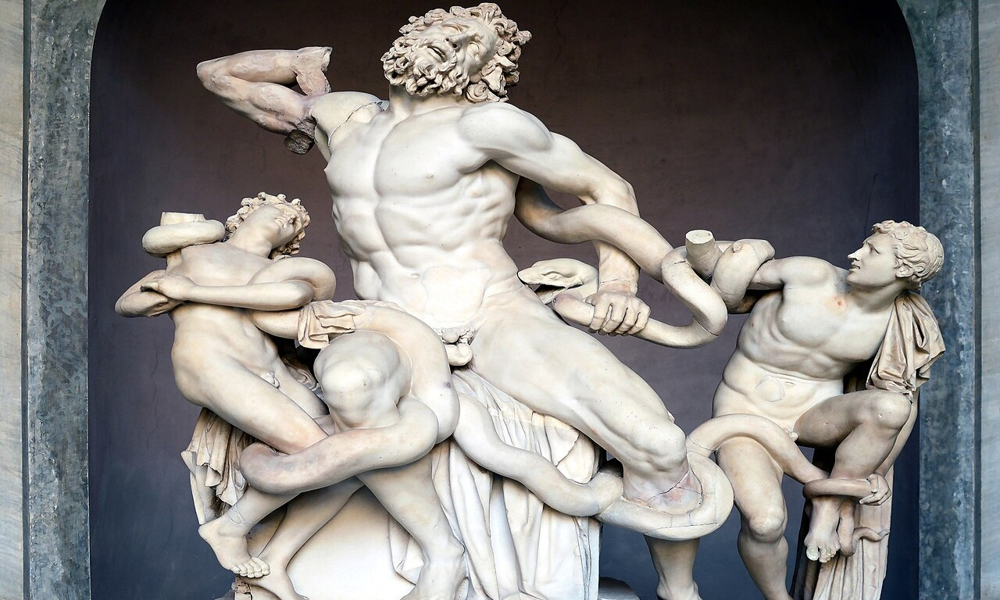

Must-See
St. Peter's Basilica
St. Peter's Basilica is the great free church in Vatican City, built over St. Peter's tomb. See its history, what to see inside, the dome climb, and how to visit.
With 54 galleries, over 20,000 works on public display, and 7 kilometers of halls, knowing what to prioritize is the key to an unforgettable Vatican experience. Explore our 10 dedicated sight guides covering Michelangelo, Raphael, Bernini, and the Vatican's greatest artistic treasures.

Michelangelo's 1508–1512 ceiling, The Creation of Adam, and The Last Judgment altar wall located at the climax of the museum route.
Four interconnected papal chambers with Raphael's Renaissance frescoes, headlined by the world-famous School of Athens.
The 120-metre corridor of 40 topographical Italian maps beneath a gilded ceiling, and Giuseppe Momo's 1932 double-helix exit ramp.
The world's largest Christian church housing Michelangelo's Pietà and Bernini's Baldachin, flanked by 23 hectares of serene Papal Gardens.
Independently researched guides detailing the history, exact gallery locations, and best viewing times for every major Vatican highlight.
St. Peter's Basilica is the great free church in Vatican City, built over St. Peter's tomb. See its history, what to see inside, the dome climb, and how to visit.

St. Peter's Square is Bernini's great oval plaza in front of the basilica in Vatican City. See its colonnade, obelisk, and fountains, and how to visit it for free.

The Raphael Rooms in the Vatican Museums are four frescoed rooms painted by Raphael, home to the School of Athens. Here is what to see and how to visit them.

The Sistine Chapel is the last and most famous room of the Vatican Museums. See who painted it, how long it took, the ceiling, the Last Judgment, and how to visit.

The Vatican Gardens cover half of Vatican City behind St. Peter's. You can only visit on a booked tour, not for free. Here is how to visit and what you will see.

The Vatican Pinacoteca is the picture gallery of the Vatican Museums, home to Raphael's Transfiguration and works by Leonardo and Caravaggio. Here is what to see.

The best things to do near the Vatican, from Castel Sant'Angelo and the Gianicolo view to Piazza Navona and the Pantheon. Here are 12 nearby attractions to add.

The Vatican Museums Gallery of Maps is a 120-metre hall of painted maps under a golden ceiling. Here is what you are looking at and how to see it at its best.

The top Vatican Museums highlights, from the Sistine Chapel and Raphael Rooms to the Gallery of Maps and spiral staircase. Here are the 10 things not to miss.

The Vatican Museums spiral staircase is the famous double-helix ramp at the exit, designed by Giuseppe Momo in 1932. Here is what it is and how to photograph it.
Select your personal travel focus to see which galleries and masterpieces you should prioritize.
Start in Cortile della Pigna, then see the 1st-century BC sculpture of Laocoön and His Sons in the Octagonal Court that inspired Michelangelo.
Walk the golden corridor of Italian regional cartography and stand before Raphael's masterpiece The School of Athens.
Gaze up at the Creation of Adam on Michelangelo's ceiling, followed by the Pietà inside St. Peter's Basilica.
Often bypassed by rush crowds: see Raphael's final altarpiece The Transfiguration, Leonardo da Vinci's St. Jerome, and Caravaggio's Entombment.
Analyze the High Renaissance fresco programs of the Stanza della Segnatura and the Pinturicchio-decorated Borgia Apartments.
Contrast the energetic youthful style of the 1508–1512 ceiling with the dramatic, troubled power of The Last Judgment completed three decades later.
Photograph Arnaldo Pomodoro's gleaming bronze Sphere Within a Sphere with the Vatican skyline and St. Peter's dome in the background.
Capture the 120-metre corridor perspective with sunlight illuminating the intricate barrel-vaulted stucco reliefs.
Shoot down the mesmerizing double-helix staircase at the exit, then head to St. Peter's Square for Bernini's symmetrical colonnade.
Follow the direct signposted overhead signs "Capella Sistina" straight through the Gallery of Tapestries and Maps without detours.
Take 15 minutes to admire the Stanza della Segnatura before proceeding to the private chapel route.
Spend 30 quiet minutes inside the Sistine Chapel, exiting smoothly down the Momo ramp to Viale Vaticano.
Quick-reference guide to ticketing, average visit duration, and photography rules across all major attractions.
| Attraction | Location | Ticket Required | Avg. Duration | Key Masterpiece | Photography Rule |
|---|---|---|---|---|---|
| The Sistine Chapel | End of Museum Route | Standard Museum Ticket | 30–45 mins | Ceiling & The Last Judgment | Strictly Forbidden |
| The Raphael Rooms | Palace of the Popes | Standard Museum Ticket | 30–45 mins | The School of Athens | Allowed (No Flash) |
| Gallery of Maps | Upper Galleries Corridor | Standard Museum Ticket | 20–30 mins | 40 Topographical Frescoes | Allowed (No Flash) |
| The Pinacoteca | Courtyard of the Cuirasses | Standard Museum Ticket | 45–60 mins | Raphael's Transfiguration | Allowed (No Flash) |
| Spiral Staircase (Momo) | Museum Exit Ramp | Standard Museum Ticket | 10–15 mins | 1932 Bronze Double-Helix | Allowed (No Flash) |
| St. Peter's Basilica | Piazza San Pietro | Free Admission | 60–90 mins | Michelangelo's Pietà | Allowed (No Flash) |
| St. Peter's Dome Climb | Basilica Portico Entry | €10 (Stairs) / €15 (Lift) | 45–60 mins | 360° Rome Panorama | Allowed |
| The Vatican Gardens | Behind St. Peter's | Special Booked Tour Only | 2 hours | Papal Grottoes & Fountains | Allowed |
How to make the most of your visual journey without museum fatigue.
In the Sistine Chapel, don't just stare straight up immediately. The sidewall frescoes by Botticelli and Perugino are masterpieces of early Renaissance narrative art.
The Sistine ceiling rises over 20 metres (68 feet) above you. A compact pair of opera glasses or pocket binoculars brings out Michelangelo's brushstroke details.
The Gallery of Maps is arranged geographically as if you were walking down the spine of the Apennine Mountains, with the Tyrrhenian coast on one side and Adriatic on the other.
Inside the Stanza della Segnatura, look at the bottom right of The School of Athens to spot young Raphael in a black beret staring directly out at the viewer.
Because it is situated near the entrance rather than on the direct corridor to the Sistine Chapel, room after room of Da Vinci, Caravaggio, and Giotto is peaceful and uncrowded.
When exiting, lean carefully over the top balcony of the double-helix ramp to capture the mesmerizing geometric spiral pattern before descending.
Straightforward answers to the most common questions about Vatican artworks and attractions.
The Sistine Chapel is located at the very end of the Vatican Museums route. To reach it, all visitors must walk through the museum galleries, including the Gallery of Tapestries, Gallery of Maps, and Raphael Rooms. There is no shortcut that skips the museums entirely.
Michelangelo's The Creation of Adam on the central Sistine Chapel ceiling (showing God reaching out to touch Adam's finger) is universally regarded as the most famous painting in the Vatican, followed by Raphael's The School of Athens in the Raphael Rooms.
The photography ban originates from the 1980–1994 restoration funded by Nippon Television Network, which was granted exclusive photo rights. Today, the Holy See maintains the strict ban to preserve the chapel's sanctity as an active sacred consecrated space and to prevent crowd blockage.
Yes. St. Peter's Basilica is an independent Catholic church entered directly from St. Peter's Square. Admission to the basilica is 100% free and open daily from 7:00 AM. You do not need a museum ticket to enter St. Peter's Basilica.
No. Independent self-guided visits to the Vatican Gardens are not allowed. You can only visit the Papal Gardens by booking an official guided walking tour or an open-top electric minibus audio tour. All garden tickets include general admission to the Vatican Museums.
The famous double-helix ramp is known as the Momo Spiral Staircase, designed in 1932 by architect Giuseppe Momo. Its innovative double-helix design features two intertwining stairways so visitors walking down never meet visitors walking up.
The papal collection contains over 70,000 cataloged works of art, of which approximately 20,000 are actively on display across 54 galleries, ranging from ancient Roman and Egyptian sculptures to High Renaissance altarpieces and modern religious art.
Castel Sant'Angelo is an easy 10-minute walk down Via della Conciliazione. Across the Tiber River, Piazza Navona, the Pantheon, and the historic Prati dining quarter are ideal afternoon companions to a morning Vatican visit.